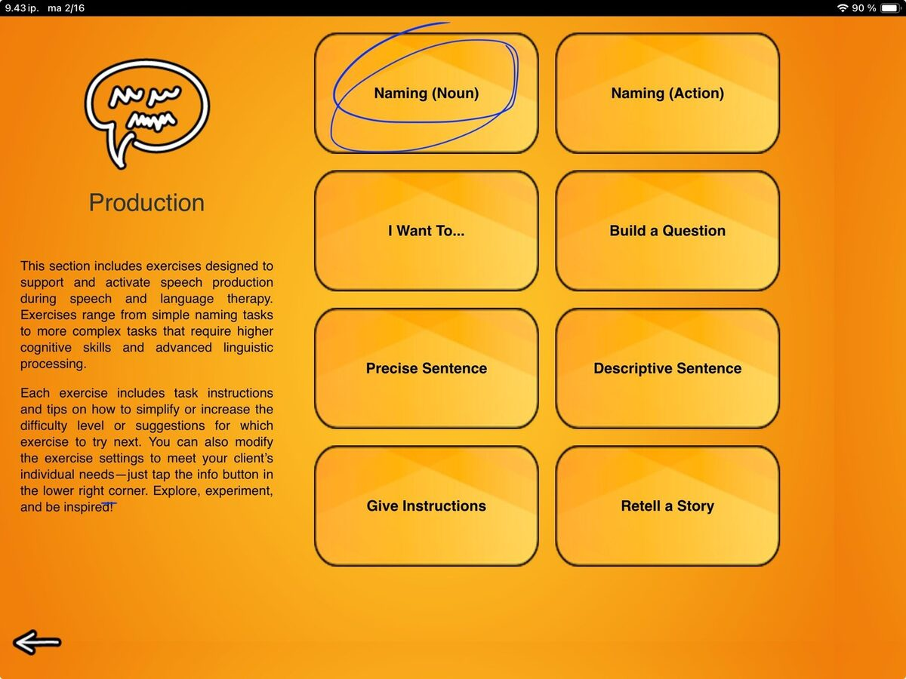
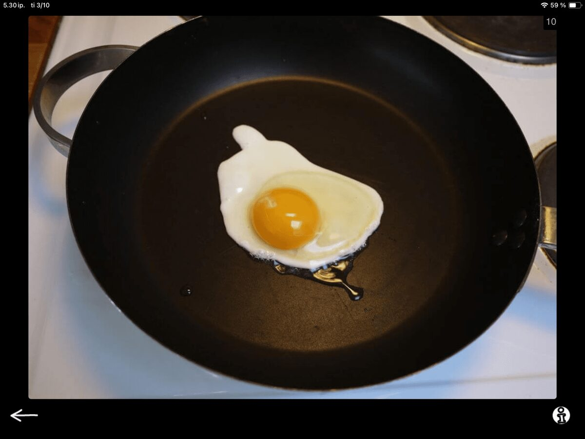
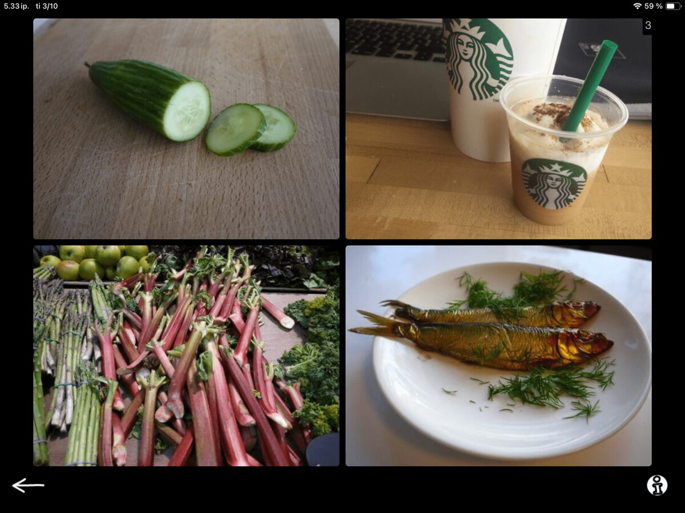
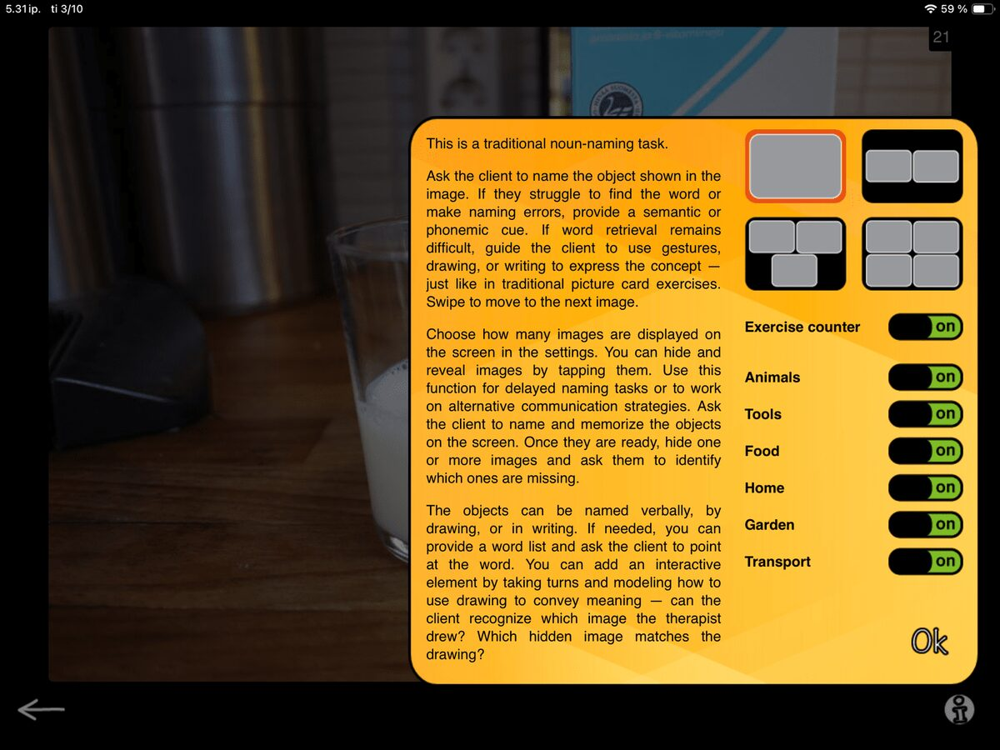
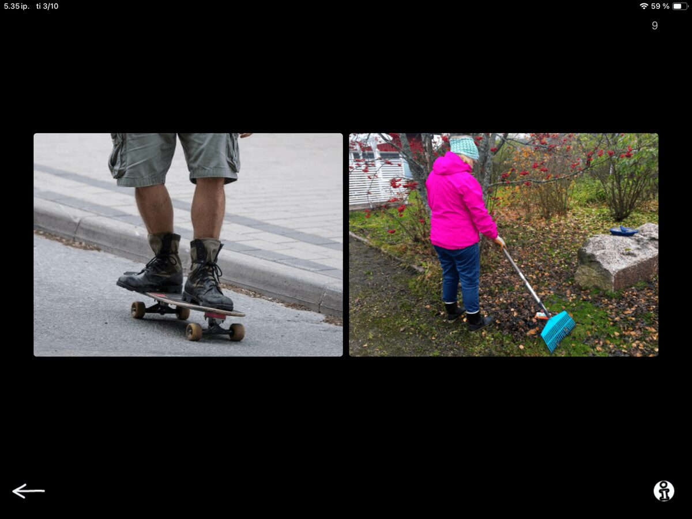
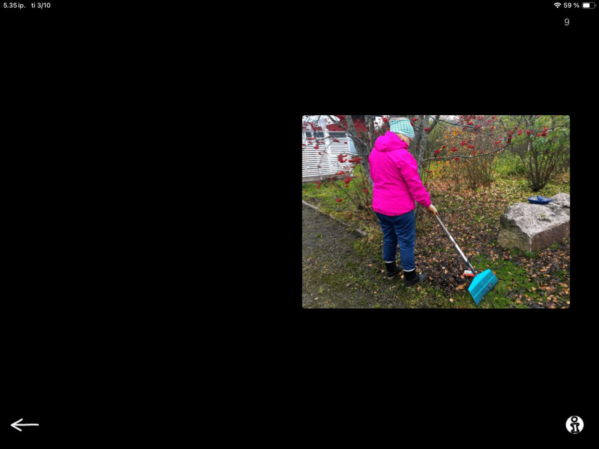

To kick things off for the Speech Production category, I will cover not just one, but two tasks in this first post! These tasks are Naming, Nouns and Naming, Actions.



As you can guess from the names, one of the tasks contains images for eliciting noun responses and the other ups the stakes by introducing images that show an action. I will save the story behind the images themselves for a separate post — and that one will be fun. Plenty of stories behind the real-life images in SanapsisPro!

Technically these two Naming tasks are very similar, and both are familiar speech therapy flashcard-type tasks. This is the task format people envision when they think about speech therapy. You have a picture, you show it to your client and they say the name of the item or action in the picture.
When you launch the exercise in SanapsisPro you see an image or multiple images, and swipe forward or back to alternate between them. You can adjust the number of images shown on screen and filter them by category. So simple, so useful and so versatile.
But hey, wait a minute! When you tap an image, it disappears. When you tap the screen again, the image comes back. This seems a bit odd. Why does the image disappear? Seems like something that should be fixed! Or… hmm… is it maybe surprisingly clever? A feature, not a bug? Well, I like to think it is surprisingly clever (as I designed it, hah).


This feature allows you to work on delayed naming or repetition. Ask your client to name or repeat the object in the image. Then tap the image and ask them to tell you what is hiding behind that black screen.
When I have multiple images on screen I can get my clients to go the extra mile by asking them to:
Memorize the items on screen
Close their eyes (as I hide one of more of images on screen) and
Tell me which one is missing.
=> Instant, playful fun featuring memory and naming challenges!
This can work well in group settings too. Have clients team up for the memory challenge!
You can change up the task and add an element of reciprocal communication by taking turns. Images are easy to hide and reveal for the client, and having them quiz you can be a fun challenge. This can target many goals, such as taking a leading role in the exchange, practicing memory and attention, and listening closely to verify answers.
With over 500 images in Naming, Nouns and more than 300 real-life action images in Naming, Actions, there is plenty of material to keep your sessions fresh and engaging for a long time. Hope you have fun mixing up the familiar Naming task!